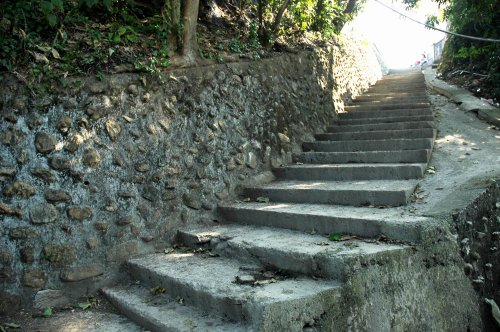

無某崎
「無某崎」由來：早期在台地的居民民生用水都需要到南烘溪挑水，上下台地十分辛苦。
由於男人下田，挑水的工作主要落在女人身上，因此在地的男人都晚婚或討不到老婆。
早期台地青年有得三鐵冠軍的國手，和上下「無某崎」鍛鍊有關。 坡頂有台地最大的糙葉樹。「無某崎」下方有一座土地公廟-五福宮，祭拜水神及土地公，廟側有大雀榕一株。
「無某崎」由來：早期在台地的居民民生用水都需要到南烘溪挑水，上下台地十分辛苦。
由於男人下田，挑水的工作主要落在女人身上，因此在地的男人都晚婚或討不到老婆。
早期台地青年有得三鐵冠軍的國手，和上下「無某崎」鍛鍊有關。 坡頂有台地最大的糙葉樹。「無某崎」下方有一座土地公廟-五福宮，祭拜水神及土地公，廟側有大雀榕一株。